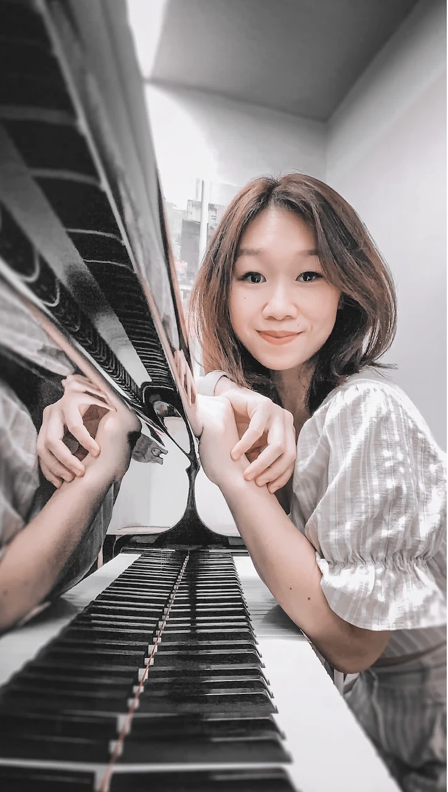

Music & movement by The Piano Odyssey
Little discoveries. Musical beginnings.
Dalcroze-inspired music and movement for ages 2½–5, with a parent or caregiver. Trial class on Sunday 6 December, 9:30am, in Aljunied.
The approach
Music, met through the voice and body.
Happy Feet is the music-and-movement brand of The Piano Odyssey. Before a musical idea becomes a symbol on a page or a movement of the fingers, it can be experienced through the voice and body.
The approach is inspired by Dalcroze education, which teaches music through listening, movement, singing, and improvisation. Here, music and movement are valuable experiences in their own right, whether or not a participant chooses to play an instrument.
Feel a pulse.
We step to the music and notice when it speeds up, slows down, or stops. The body learns the beat before anyone has to count it.
Discover a melody’s shape.
Singing shows where a tune rises, falls, and comes to rest, long before the notes are read from a page.
Explore a phrase’s direction.
A gesture can travel with a musical phrase, showing where it is heading and how it arrives.
Programmes
Who Happy Feet is for.
One approach, shaped for each group. Choose yours to see what it involves.
-
Ages 2½–5
Early years
With a parent or caregiver. Classes opening for 2027.
See the class -
Ages 5–16
Children & youth
Three groups: ages 5–8, 8–12, and 12–16.
See the age groups -
Beginners
Adults
New to music, or returning to it. No instrument needed.
Read more -
Performers
Musicians & dancers
Players, singers, dancers, and teachers deepening rhythm and phrasing.
Read more -
Retirees
Seniors
Older adults, as a group of friends or through a club or centre.
Read more -
Workshops
Schools & educators
Workshops for a whole class, and practical sessions for teachers.
Read more -
Companies
Corporate teams
Workshops of four hours, a full day, or three days.
See the formats
Happy Feet Early Years · ages approximately 2½–5
A welcoming first step.
A ten-class package in Aljunied. A parent or caregiver attends and takes part with each child.
Classes use songs, live piano improvisation, movement games, stories, and creative exploration.
Whatever comes next, whether piano, violin, ballet or dance, every child starts with the same foundations: feeling a steady beat, hearing high and low, and listening closely. No instrument or experience is needed.
Trial class: Sunday 6 December 2026, 9:30am (45 mins). Participants are limited, so please book early.
Term 1, 2027: every Sunday, 10:30am (45 mins), 10 January to 21 March. 10 classes, no class on 7 February.
Children are grouped by age: 2½–3½ and 4–5.
S$680 for 10 classes
When you sign up by 13 December 2026, including before the trial.
- Regular fee
- S$800 for 10 classes
- Early-booking saving
- S$120 (15%)
- Who attends
- Child with a parent or caregiver
- Where
- MusArt Co-Create, Aljunied
Looking ahead
For teachers, in time.
A Happy Feet teacher development programme is a longer-term plan and is not available yet. There are no courses or certifications to enrol in today.
If you teach and would like to hear when this develops, you are welcome to send a note.
Enquire
Say hello.
Ask about the December trial class, 2027 early-years classes, or any of the other programmes.
- Emailthepianoodyssey@gmail.com
- WhatsApp+65 8869 8587
- StudioMusArt Co-Create, Aljunied. Directions are shared when you book.

Meet your teacher
Khew Yun Zhen
A pianist and piano teacher with close to three decades of dance behind her, Yun Zhen brings the two together in every class. She is currently working towards her Dalcroze Certificate, studying with Dr. Jeremy Dittus and Dr. Michael Joviala.